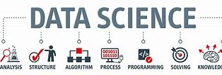
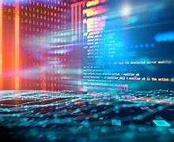

Artificial Intelligence

Explore the forefront of Artificial Intelligence (AI) research, where our department is pushing the boundaries to create intelligent machines. Our focus includes machine learning, natural language processing, and computer vision, with the aim of advancing knowledge and applications that benefit both students and the tech industry.
Cybersecurity
Delve into the world of Cybersecurity research, where we are dedicated to developing strategies and technologies to protect computer systems and data. Our efforts contribute not only to the security of digital information but also provide valuable insights for students seeking to specialize in this critical area of computer science.
Data Science
Join us in the realm of Data Science research, where we extract valuable insights from large datasets. Through statistical methods, machine learning algorithms, and data analysis techniques, we aim to uncover patterns and empower students with skills that are essential in both academia and the tech industry.
Human-Computer Interaction
Experience the intersection of technology and human experience through our Human-Computer Interaction (HCI) research. We focus on designing user-friendly computer technology, enhancing the user experience, and promoting accessibility. Students engaging in this research gain practical knowledge for creating innovative and user-centric solutions.
Software Engineering
Immerse yourself in Software Engineering research, where we systematically design, develop, and maintain software applications. Our department's efforts in this area encompass best practices, methodologies, and tools, ensuring that students receive a comprehensive education that aligns with industry standards.
Internet of Things (IoT)
Discover the interconnected world of Internet of Things (IoT) research. Our exploration includes the study of devices communicating over the internet, smart devices, sensor networks, and IoT applications. Engage with us to contribute to the evolution of IoT technologies and gain insights applicable to real-world scenarios.